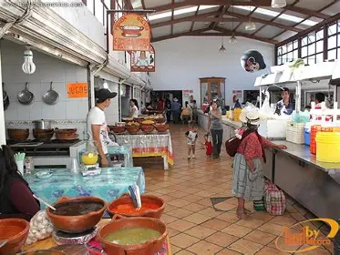

"Iglesia San Francisco"
"Valle de Bravo"
La Parroquia de San Francisco de Asís se encuentra en la Manzana 011 de la calle 5 de Febrero, en el centro de Valle de Bravo, México. Esta iglesia destaca por su hermosa y majestuosa arquitectura neoclásica, tanto en su exterior como en su interior. Es un lugar ideal para disfrutar de momentos llenos de encanto, paz y buena energía para el alma. Sentarse en silencio en su interior o simplemente observarla, tiene el poder de renovar el espíritu. Construida en 1880, esta bella iglesia se encuentra en pleno centro de Valle de Bravo y es un atractivo turístico imperdible
Es un monumento histórico y arquitectónico que combina estilos neoclásicos, neogóticos y franciscanos, con fachada de cantera, columnas robustas, vitrales y retablo dorado que alberga la imagen del santo patrono
Es considerada una “joya arquitectónica” por su mezcla de estilos y detalles en cantera.SS El interior ofrece un ambiente de paz, con vitrales y obras del siglo XVII, y es un punto de referencia cultural y espiritual en Valle de Bravo.
Kiosko
"Centro de valle"
Se encuentra en el Jardín Central, en el centro histórico de Valle de Bravo, cerca de la Parroquia de San Francisco de Asís y los tradicionales portales.
El kiosco fue construido en 1971. Es uno de los elementos más representativos del Jardín Central, un espacio que también ha sido conocido como Plaza Hidalgo y Plaza de los Mártires.
Mercado municipal
"Centro de Valle"

Se encuentra en la calle Independencia número 209, en la zona centro de Valle de Bravo, Estado de México, cerca de la esquina con Hidalgo
El mercado es un espacio tradicional del municipio. De acuerdo con registros municipales, el terreno destinado al Mercado Municipal tiene antecedentes documentados desde 1976. Además, fue remodelado en 2007 para mejorar su imagen y atención a los visitantes.
Es importante porque impulsa la economía local, genera empleos y permite conservar las costumbres gastronómicas y comerciales de Valle de Bravo
El Mercado Municipal de Valle de Bravo es un lugar representativo de la vida cotidiana del municipio, ya que conserva sus tradiciones, fomenta el comercio y ofrece productos característicos de la región.
Dato interesante: El mercado tiene una superficie registrada de aproximadamente 2,618 m² en el inventario municipal.
Valle de Bravo